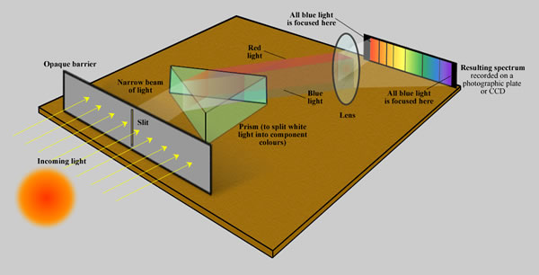
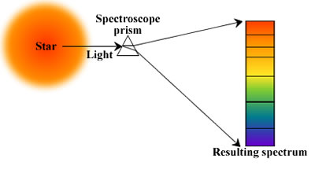
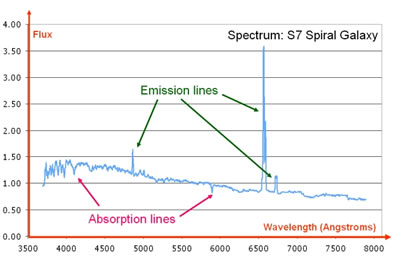

Spectroscopy is the technique of splitting light (or more precisely electromagnetic radiation) into its constituent wavelengths (a spectrum), in much the same way as a prism splits light into a rainbow of colours. However, in general, a spectrum is generally more than a simple ‘rainbow’ of colours. The energy levels of electrons in atoms and molecules are quantised, and the absorption and emission of electromagnetic radiation only occurs at specific wavelengths. Consequently, spectra are not smooth but punctuated by ‘lines’ of absorption or emission.
Interactive: Explore spectroscopy — see how absorption and emission lines reveal an element's fingerprint.
Old style spectroscopy was carried out using a prism and photographic plates. These days, modern spectroscopy uses diffraction gratings to disperse the light, which is then projected onto CCDs (Charge Coupled Devices) similar to those used in digital cameras. The 2-dimensional spectra are easily extracted from this digital format and manipulated to produce 1-dimensional spectra like the galaxy spectrum shown below.
These 1-dimensional spectra contain an astonishing amount of useful data:

Credit: VizieR catalogue III/219, Spectral Library of Galaxies, Clusters and Stars (Santos et al. 2002)
- The precise position (wavelength) at which known emission and absorption lines are detected can be used to measure the redshift of the observed object. For example, if the Hβ (486.2 nm) hydrogen line is detected at 487.8 nm, we calculate that the object has a recession velocity of 1,000 km/sec. Apart from measuring distances, this type of analysis can also be used to detect spectroscopic binaries and extrasolar planets.
- The widths of both the absorption and emission lines can be used to measure the internal velocity dispersion of complex objects (e.g. the average velocity of stars within galaxies). This is achieved through measurement of spectral line broadening from which the velocity broadening can be calculated.
- Many (indeed most) absorption and emission lines are produced by metals. The depths or heights of these lines can be used to estimate the abundances of the metals responsible. In stars, these also permit the measurement of the temperature and pressure of the stellar atmosphere. In objects such as galaxies, they permit an estimation of age, though the spectra are somewhat susceptible to the age-metallicity degeneracy making this a difficult procedure.
- Finally, the overall shape of the spectrum contains clues to many other aspects of the observed population including age and interstellar reddening (extinction).
The enormous quantities of information contained within a single spectrum makes spectroscopy one of the most powerful tools at an astronomer’s disposal.
See also: abundance ratio.